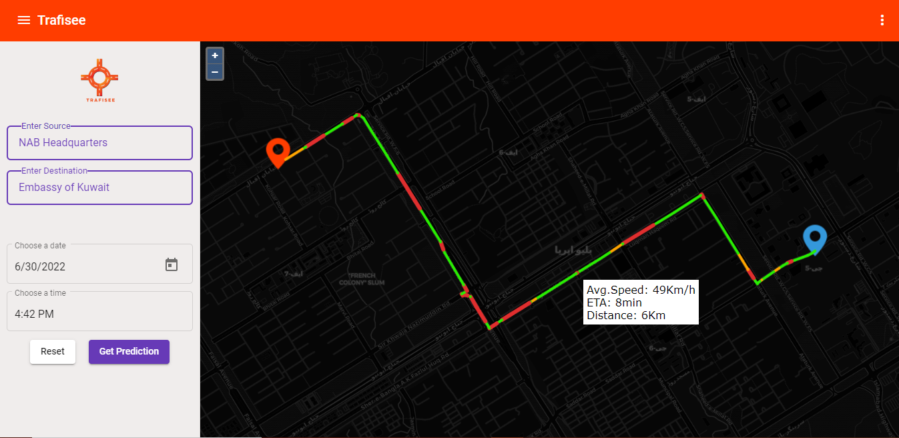
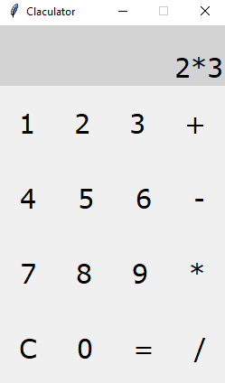

Web Enabled Smart Traffic Congestion System
Smart Traffic Congestion System is a web Application where user ca get prediction of traffic congestion ot specific road on specific date and time. Used technologies are MERN, OpenLayers, OSRM, and Python. Worked as web developer in Digital Distribution Lab(DDL). Code is not public due to organisation privacy policiy.
Authentication System

User Authentication System is build for authentication of users on website. Before visiting site users will login first by providing credintials. If user don't has any account he/she should register first. Used Technologies are MongoDB and Node.js.
Blog Website

A simple blog website where user can read and publish new blogs. Used technologies are EJS, CSS.
Notes Keeper

Nootes Keeper is a web application where user can store import notes and also read them. Used technologies are React.js.
App Manager

App manager is a desktop application where user can add all files and application and run any file he/she wants. Used technologies are Python.

Calculator
A simple calculator where user can perform arthematic operations. Used technologies are Python.

Youtube Downloader

Youtube downloader is web application where user can download youtube videos at different resolutions. Used technologies are Python and Flask.